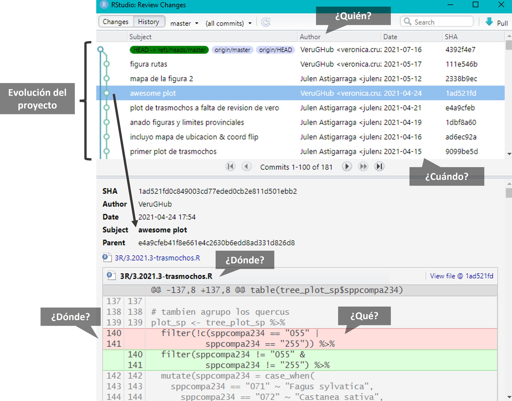

#|eval: false
# También puedes hacerlo utilizando el paquete usethis
# install.packages("usethis")
# library(usethis)
# use_git_config(user.name = "Monchi", user.email = "monchi@example.org")Introducción a Git y GitHub para el trabajo colaborativo
I Jornadas de Ecoinformática de la AEET

1 Introducción
Git (https://git-scm.com/) y GitHub (https://github.com/) están ganando cada vez más importancia en diversos campos de estudio a medida que el volumen de datos aumenta y los análisis se hacen más complejos. Aprenderemos cómo Git puede usarse para controlar la trazabilidad de los cambios realizados en proyectos o archivos y veremos cómo este control de versiones es especialmente útil en proyectos colaborativos mediante el uso de un servidor de alojamiento en línea como GitHub.
Aunque existen multitud de manuales disponibles gratuitamente sobre cómo utilizar Git y GitHub, estas herramientas son complejas. El propósito original de Git era ayudar a grupos de desarrolladores informáticos a trabajar en colaboración en grandes proyectos de software, por lo que puede resultar enrevesado, hay múltiples soluciones para el mismo problema y tiene una curva de aprendizaje pronunciada. Sin embargo, Git y GitHub nos pueden ayudar a solucionar algunos problemas comunes derivados de la creación de diferentes versiones que pueden ser un poco molestos:
- Sobreescritura de un archivo
- Versiones finales infinitas

- Trabajo por error en una versión que no era la final
- Creación de copias “en conflicto” cuando dos personas trabajan a la vez
- Ediciones sin control de cambios

1.1 Qué es Git
Git es un sistema avanzado de control de versiones (como el “control de cambios” de Microsoft Word) distribuido (Blischak, Davenport, and Wilson 2016; Ram 2013). Git permite “rastrear” el progreso de un proyecto a lo largo del tiempo ya que hace “capturas” del mismo a medida que evoluciona y los cambios se van registrando. Este sistema permite ver qué cambios se hicieron, quién los hizo y por qué, e incluso volver a versiones anteriores. Además, Git facilita el trabajo en paralelo de varios participantes. Mientras que en otros sistemas de control de versiones (p. ej. Subversion (SVN, https://subversion.apache.org/) o Concurrent Versions System (CVS, http://cvs.nongnu.org/)) hay un servidor central y cualquier cambio hecho por un usuario se sincroniza con este servidor y de ahí con el resto de usuarios, Git es un control de versiones distribuido que permite a todos los usuarios trabajar en el proyecto paralelamente e ir haciendo “capturas” del trabajo de cada uno para luego unirlos. Otras alternativas de control de versiones distribuido comparables a Git son Mercurial (https://www.mercurial-scm.org/) o Bazaar (https://bazaar.canonical.com/), pero Git es con diferencia el más utilizado.

1.2 Qué es GitHub
GitHub es un servidor de alojamiento en línea o repositorio remoto para albergar proyectos basados en Git que permite la colaboración entre diferentes usuarios o con uno mismo (Galeano 2018; Perez-Riverol et al. 2016). Un repositorio es un directorio donde desarrollar un proyecto que contiene todos los archivos necesarios para el mismo. Aunque existen distintos repositorios remotos (p. ej. GitLab, https://gitlab.com/, o Bitbucket, https://bitbucket.org/) con funcionalidad similar, GitHub es hoy en día el más utilizado. GitHub registra el desarrollo de los proyectos de manera remota, permite compartir proyectos entre distintos usuarios y proporciona la seguridad de la nube entre otras funciones. Cuando se trabaja en proyectos colaborativos, la base de la interacción entre Git y GitHub es que todos los colaboradores de un proyecto están de acuerdo en que GitHub contiene la copia principal del proyecto, es decir, GitHub contiene la copia centralizada del control de versiones distribuido o descentralizado.


2 Instalación
En este punto es necesario que tengas instalada la versión más reciente de R (https://cloud.r-project.org/), RStudio (https://posit.co/download/rstudio-desktop/), Git (https://happygitwithr.com/install-git.html) y una cuenta en GitHub (https://github.com/) creada.
2.1 Ejercicio
En el shell, preséntate a Git (Chapter 7: Git-Intro)
Tools -> Terminal
git config --global user.name 'Nombre Apellido'git config --global user.email 'nombre@ejemplo.com'💡Este debe ser el correo electrónico asociado a tu cuenta de GitHub

Compueba que has instalado Git correctamente:
git --versionPara ver el usuario utilizado para configurar Git:
git config user.namePara ver a qué cuenta de correo está asociado Git:
git config user.emailPara ver tanto el usuario como el correo asociado:
git config --global --list
Para la resolución de problemas durante la instalación recomendamos mirar aquí: https://happygitwithr.com/troubleshooting.html
Genera un PAT (Personal Access Token) para HTTPS
Git puede comunicarse con un servidor remoto utilizando uno de los dos protocolos: HTTPS o SSH. Nosotros utilizaremos HTTPS con personal access token (PAT, https://happygitwithr.com/https-pat.html).
#|eval: false
# install.packages("usethis")
# install.packages("gitcreds")
# library(usethis)
# library(gitcreds)
# create_github_token() # generar un token
# gitcreds_set() # acceder al Git credential store💡Conviene describir el propósito del token en el campo Note, porque se pueden tener varios PATs. No podrás volver a ver este token, así que no cierres ni salgas de la ventana del navegador hasta que almacenes el PAT localmente. ¡Trata este PAT como una contraseña!
3 Repositorios y proyectos
Un repositorio es como un “contenedor” donde desarrollar un proyecto.
Para crear un repositorio en GitHub damos a “+ New repository”. Aquí se indica el nombre, una pequeña descripción, y si quieres que sea público o privado. Se recomienda iniciar el repositorio con un archivo “README” (Initialize this repository with a README) para recoger cualquier información esencial para el uso del repositorio (estructura, descripción más detallada del contenido, etc.).
En RStudio, creamos un nuevo proyecto y lo conectamos al repositorio: File > New project > Version control > Git > copiar el URL del repositorio que hemos creado de GitHub (está en la página principal de nuestro repositorio, en “clone or download”). Seleccionamos el directorio local donde queremos guardar el proyecto y pulsamos en “Create project”.
Si vamos al directorio local seleccionado, encontraremos la carpeta conectada a Git y GitHub que hemos creado en nuestro ordenador. Podemos copiar aquí todos los archivos que nos interesan para el proyecto (datos, imágenes, etc).
💡Para más información sobre cómo clonar el repositorio en GitHub (repositorio remoto) en nuestro ordenador (repositorio local) ver https://happygitwithr.com/rstudio-git-github.html para hacerlo desde RStudio y Galeano (2018) para hacerlo mediante la línea de comandos.
💡En caso de querer conectar un antiguo proyecto de RStudio a Git y GitHub, puedes seguir los pasos que se describen aquí: https://happygitwithr.com/existing-github-first.html.
3.1 Estructura del repositorio de GitHub
En la página principal del repositorio en GitHub podemos encontrar las siguientes pestañas:
Code: contenido del proyecto
Issues: foro del proyecto para comentar fallos, tareas pendientes, hacer peticiones a los desarrolladores, preguntar dudas, etc. Se pueden asignar tareas o preguntas a los miembros del proyecto escribiendo “@” antes del nombre del colaborador. Una vez resuelto, el issue se cierra (Close issue).
Pull requests: veremos más adelante para qué sirve.
Actions: son pequeñas aplicaciones que realizan alguna acción cada vez que se sube un commit (p. ej. tests).
Projects: es como una hoja de cálculo con tareas, encargados, deadlines, status, etc. que se integra con las incidencias y solicitudes de incorporación de cambios para ayudar a planificar las tareas y realizar el seguimiento del trabajo.
Wiki: es un espacio para documentar el proyecto (hoja de ruta, estado, documentación detallada…).
Security: opciones de seguridad.
Insights: estadísticas del proyecto.
Settings

3.1.1 Ejercicio
Crea un repositorio en GitHub y conéctalo a un nuevo proyecto de RStudio (esto generará un repositorio (carpeta) en tu ordenador en la ubicación que hayas especificado). Incluir un archivo “.gitignore”
Crea un nuevo script de R en el directorio de trabajo (es decir, crea un script de R y guárdalo dentro del repositorio que has creado)
En RStudio ve a la pestaña Git para ver todos los documentos que han sido identificados por Git
Una vez finalizada la instalación y creado un proyecto conectado a GitHub podrás ver la pestaña de Git en RStudio.

3.2 Git ignore
Al crear un repositorio se recomienda crear un archivo “.gitignore”. Este archivo contendrá los nombres o extensiones de los archivos del proyecto que por defecto no queremos compartir aunque estén en el repositorio local (p. ej., el archivo “.Rhistory” que RStudio crea por defecto). Es una buena práctica ignorar archivos que no sean útiles para el resto de colaboradores así como archivos muy pesados (p. ej., una base de datos resultado de correr un script) para no subirlos y descargarlos continuamente de GitHub. Para añadir archivos al gitignore se puede utilizar el botón derecho del ratón sobre el archivo en la pestaña Git de RStudio pero también se puede añadir el nombre del archivo que desamos ignorar en el archivo “.gitignore” manualmente.
4 Flujo de trabajo en Git y GitHub
Git es capaz de rastrear todos los archivos contenidos en un repositorio. Para comprender cómo Git registra los cambios y cómo podemos compartir dichos cambios con nuestros colaboradores es importante entender cómo se estructura Git y cómo se sincroniza con GitHub. Hay cuatro “zonas” de trabajo:
Directorio de trabajo (working directory): es donde se está trabajando. Esta zona se sincroniza con los archivos locales del ordenador.
Área de preparación (staging area o Index): es la zona intermedia entre el directorio de trabajo y el repositorio local de Git. Es la zona de borradores. El usuario debe seleccionar los archivos que se van a registrar en la siguiente “captura” de Git.
Repositorio local (local repository o HEAD): es donde se registran todos los cambios capturados por Git en tu ordenador.
Repositorio remoto (remote repository): es donde se registran todos los cambios capturados por Git en la nube (GitHub).

4.1 ¿Cómo moverse de una zona a otra?
Se puede hacer mediante línea de comandos en la terminal y también mediante la pestaña integrada en RStudio, pero el proceso es el mismo.
Al principio todos los cambios realizados aparecen en amarillo porque Git no sabe que hacer con ellos. Estamos en el directorio de trabajo y puede que no nos interese guardar todos los cambios para el futuro.
Para añadir un cambio del directorio de trabajo al área de preparación hay que utilizar git add (en la pestaña Git de RStudio se hace seleccionando el archivo). Este comando indica a Git que se quieren incluir las actualizaciones de algún archivo en la próxima “captura” del proyecto y que Git las registre. Sin embargo, git add no afecta al repositorio local.
Para registrar los cambios que nos interesen hay que utilizar git commit (en la pestaña Git de RStudio se hace clickando el botón “Commit”). Al ejecutar git commit se hace una “captura” del estado del proyecto. Junto con el commit se añade un mensaje con una pequeña explicación de los cambios realizados y por qué (p. ej. “incluyo las referencias formateadas”). Cada git commit tiene un SHA (Secure Hash Algorithm) que es un código alfanumérico que identifica inequívocamente ese commit (p. ej. 1d21fc3c33cxxc4aeb7823400b9c7c6bc2802be1). Con el SHA siempre se pueden ver los cambios que se hicieron en ese commit y volver a esa versión fácilmente.
Por último, git push permite subir los cambios que hemos hecho a GitHub y quedarán visibles para nuestros colaboradores (en la pestaña Git de RStudio se hace clickando el botón “Push”). Básicamente, git commit registra los cambios en el repositorio local y git push actualiza el repositorio remoto con los cambios y archivos asociados.
Cuando se retoma un proyecto tras horas, días o incluso meses, con git pull se descargan todas las actualizaciones que haya en GitHub (nuestras o de nuestros colaboradores), que se fusionarán (merge) con el último commit en nuestro repositorio local (en la pestaña Git de RStudio se hace clickando el botón “Pull”).


Además, en la pestaña Git de RStudio podemos observar el botón “Diff” que muestra los cambios que se han hecho a cada archivo desde el último commit y las ramas (que explicaremos más abajo). Clickando con el botón derecho del ratón sobre algún cambio registrado podemos abrir los archivos que han sido modificados mediante “Open file” y con el botón “Revert” volvemos al estado del último commit (⚠️cuidado con esto porque te borrará los cambios realizados en tu directorio de trabajo).
4.1.1 Ejercicio
En el proyecto generado en el ejercicio anterior, guardad y subid los cambios realizados a GitHub (git add + git commit + git push)
💡git status: muestra la rama en la que estamos y los cambios hechos y añadidos desde el último commit.
💡Usar git commit es para el proyecto como usar anclajes cuando estamos escalando una pared de roca. Desarrollar un script sin commits es como escalar sin asegurarse: puedes avanzar mucho más rápido a corto plazo, pero a largo plazo las probabilidades de fallo catastrófico son altas. Por otro lado, hacer muchos commits va a ralentizar tu progreso. Lo mejor: usar más commits cuando estás en un territorio incierto o peligroso.

En el repositorio remoto de GitHub, en la pestaña Code podemos observar el contenido de nuestro proyecto, incluyendo cada commit realizado:

4.2 Navegar por el historial
El historial de un repositorio (🕘XX commits) contiene una lista de enlaces a todos los commits que se han realizado en cualquiera de las ramas. Dentro de cada commit se pueden ver los archivos añadidos o borrados en esa “captura” y las líneas de código añadidas (en verde) o borradas (en rojo) en cada archivo modificado. Además, en el historial, se pueden añadir comentarios en líneas concretas de código o comentarios generales al commit entero.
En GitHub también se puede acceder a la historia de commits de cada archivo en concreto (History) y al autor de cada parte del código (Blame).
El historial del proyecto y de los archivos también es accesible a través de RStudio (🕒).
💡Más información sobre como navegar en el pasado del proyecto aquí: https://happygitwithr.com/time-travel-see-past.html

💡En los issues se puede referenciar a una línea concreta de código de un estado concreto del proyecto entrando en el archivo en la pestaña Code y clickando en el número de línea que se quiere comentar, o a un commit entero copiando el SHA.
💡Si quiero volver atrás en el tiempo o si hago un cambio que no quiero ¿cómo lo puedo resolver? Hay múltiples opciones pero aquí (en la sección de “La he liado ¿cómo deshago los cambios?”) detallamos tres: restore, reset y revert.
6 Trabajo colaborativo
Aunque Git y GitHub facilitan el control de versiones de nuestros proyectos individuales, su máxima potencialidad se despliega al trabajar en equipo ya que facilitan el seguimiento del trabajo de todos los colaboradores y la integración ordenada de cada parte en un producto final.
Para dar acceso de edición a tus colaboradores, en la página principal de nuestro proyecto en GitHub entramos en “Settings -> Access -> Collaborators -> Manage Access -> Add people”. Los colaboradores pueden crear su copia local del proyecto de control de versiones clonando el repositorio remoto.
6.0.1 Ejercicio
En equipos de 2 o 3 personas:
- El dueño del repositorio invita al resto de integrantes del equipo a su proyecto
- Los colaboradores clonan el repositorio al que han sido invitados a su directorio de trabajo
6.1 Ramificación
Git permite crear una “rama” (branch) paralela al proyecto si se desea seguir una línea independiente de trabajo, bien por ser diferente de la principal (p. ej. probar un nuevo análisis) o bien para desarrollar específicamente una parte del proyecto (p. ej. trabajar sólo en la escritura de los métodos de un artículo mientras otros colaboradores trabajan en otras secciones). Las ramas permiten trabajar en el proyecto sin interferir con lo que están haciendo los compañeros. En Git, una rama es un commit al que le se le da un nombre y que contiene un “enlace” (puntero o pointer) a un SHA específico que es el origen de la rama. La rama main es la rama por defecto cuando se crea un repositorio y a partir de ella se suelen crear las demás.
Las ramas se pueden generar en la terminal y en la pestaña Git de RStudio. En la pestaña Git se generan mediante el botón “New Branch”. Al lado de “New Branch” podemos observar todas las ramas que contiene el repositorio y nos permite cambiar de rama fácilmente clickando en ellas.

6.1.1 Ejercicio
Un integrante del equipo crea una rama en el proyecto en el que colabora
Modifica la primera frase del archivo README.txt y sube los cambios al repositorio remoto
Vuelve a la rama main y comprueba el archivo README.txt

6.2 ¿Cómo se unen distintas ramas?
Cuando el trabajo desarrollado en una rama se da por finalizado hay que hacer la unión a la rama principal (“main”). Esto se puede hacer en la terminal y con el botón “pull request” en la página del proyecto en GitHub siguiendo los pasos que se explican a continuación.

Una vez que hemos realizado los cambios que queríamos en la rama y están subidos a GitHub (git add + git commit + git push), en GitHub aparece la opción de “Compare & pull request”. Aquí se genera el pull request (“Create pull request”) añadiendo un mensaje para saber lo que se está uniendo. GitHub os indicará si existen conflictos o no. Si no existen conflictos, podréis realizar el pull request sin problema y, si existen conflictos, hay que resolverlos manualmente.


6.3 Resolución de conflictos
Git puede encontrar conflictos al fusionar ramas que hay que arreglar manualmente (GitHub os indicará “Can’t automatically merge”). Esto ocurrirá si en las dos ramas se han cambiado las mismas líneas de un archivo. Hay que generar el pull request y “Resolve conflicts”.


Git muestra dónde están los conflictos así:
<<<<<<código del main=======código de la rama a unir>>>>>>

Para solucionarlo hay que escoger los cambios de la rama principal o de la rama a unir según corresponda. Una vez hecha la elección, Git permite completar el merge (es decir, un nuevo commit que contendrá las ramas fusionadas). La mejor manera de evitar conflictos o por lo menos reducir su dificultad es realizar cambios pequeños y sincronizar frecuentemente con GitHub, y tener una comunicación fluida con los colaboradores.
6.3.1 Ejercicio
- Un integrante del equipo modifica también la primera frase del archivo README.txt en la rama main y sube los cambios al repositorio remoto. Esta frase había sido previamente modificada en una rama en el ejercicio anterior.
- Un integrante del equipo combina la rama del ejercicio anterior con la rama principal (main) del proyecto.
- Resolved el conflicto (es decir, quedaos con los cambios que sirvan y subid los cambios al repositorio remoto).
💡Aquí (en la sección de “Otros comandos útiles”) podéis ver cómo borrar ramas y otros comandos útiles

7 Enlaces de interés
Ciencia reproducible
Control de versiones (Git)
Integrar Git, GitHub y RStudio
Enseñar y aprender con GitHub
Blischak, John D., Emily R. Davenport, and Greg Wilson. 2016. “A Quick Introduction to Version Control with Git and GitHub.” PLOS Computational Biology 12 (1): e1004668. https://doi.org/10.1371/journal.pcbi.1004668.
Galeano, Javier. 2018. “¿Por qué usar GitHub? Diez pasos para disfrutar de GitHub y no morir en el intento.” Ecosistemas 27 (2): 140–41. https://doi.org/10.7818/ECOS.1604.
Perez-Riverol, Yasset, Laurent Gatto, Rui Wang, Timo Sachsenberg, Julian Uszkoreit, Felipe da Veiga Leprevost, Christian Fufezan, et al. 2016. “Ten Simple Rules for Taking Advantage of Git and GitHub.” PLOS Computational Biology 12 (7): e1004947. https://doi.org/10.1371/journal.pcbi.1004947.
Ram, Karthik. 2013. “Git Can Facilitate Greater Reproducibility and Increased Transparency in Science.” Source Code for Biology and Medicine 8 (1): 7. https://doi.org/10.1186/1751-0473-8-7.

Session Info
Sys.time()[1] "2024-10-23 16:11:56 CEST"sessionInfo()R version 4.3.1 (2023-06-16 ucrt)
Platform: x86_64-w64-mingw32/x64 (64-bit)
Running under: Windows 11 x64 (build 22631)
Matrix products: default
locale:
[1] LC_COLLATE=English_United States.utf8
[2] LC_CTYPE=English_United States.utf8
[3] LC_MONETARY=English_United States.utf8
[4] LC_NUMERIC=C
[5] LC_TIME=English_United States.utf8
time zone: Europe/Paris
tzcode source: internal
attached base packages:
[1] stats graphics grDevices utils datasets methods base
loaded via a namespace (and not attached):
[1] htmlwidgets_1.6.4 compiler_4.3.1 fastmap_1.1.1 cli_3.6.1
[5] tools_4.3.1 htmltools_0.5.7 rstudioapi_0.15.0 yaml_2.3.8
[9] rmarkdown_2.26 knitr_1.45 jsonlite_1.8.8 xfun_0.42
[13] digest_0.6.35 rlang_1.1.3 evaluate_0.23